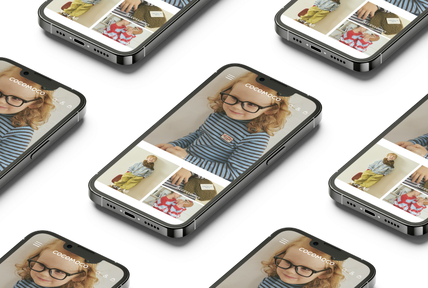

COCOMOCO
기존 사이트를 기반으로 일부 디자인을 수정하여 브랜드 콘센트에 맞는 리뉴얼 웹사이트를 제작하였습니다. 메인 컬러 지정과 직접 제작한 파비콘 을 적용해 브랜드 아이덴티티를 강화했으며, 시맨틱 태그와 미디어쿼리를 활용해 PC·Tablet·Mobile에 대응하는 반응형 웹을 구현하였습니다. 첫 개인 프로젝트로서 코드 구조와 완성도에 중점을 두어 개발하였습니다.
-
Category
Responsive Web
-
Tech Stack
HTML, CSS, JavaScript
